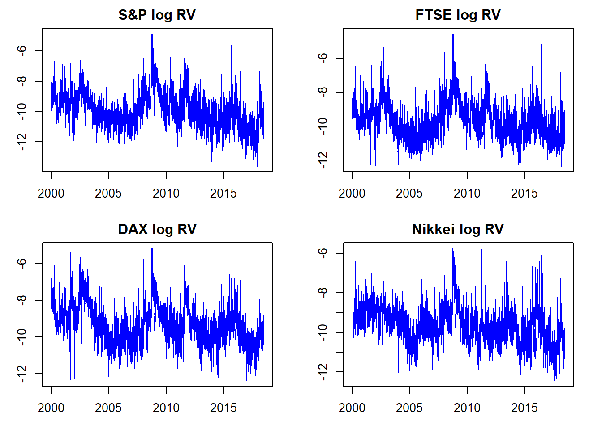

Predicting Stock Index Realised Volatility using Bayesian VARs
Abstract: This research report explores whether VARs and Bayesian VARs are able to predict realised volatility in equity index markets.
Keywords. BVARs, Realised Volatility, Stock Indices, SP500
Research Proposal
Objective and Motivation
This paper seeks to examine the effectiveness of Bayesian VARs as a method for forecasting realised volatility (RV) in equity markets. It will explore whether various Bayesian estimation techniques applied to vector autoregression can accurately predict RV. The accurate prediction of market volatility has many applications in Finance, including the pricing of derivatives and the estimation of risk measures such as Value at Risk.
Data
The models will be applied to daily data on realised variances occurring on a group of global stock indices. Stock indices serve as gauges of overall equity market performance and are generally categorised by country. For this analysis we will focus on 10 major global indices, the SPX, DJI, FTSE, GDAXI, FCHI, STOXX50E, N225, AORD, HSI and the STI.
Realised variance is a measure of historical volatility occuring in financial time series constructed from intraday high frequency return data.
Realised variance is defined as the sum of squared returns over specific period:
\[\begin{align} Realised\,Variance = \sum r^2_t \end{align}\]Where \(r_t\) is defined as the log return over a predetermined interval, for example 5 minutes:
\[\begin{align} r_t = log(p_t / p_{t-1}) \end{align}\]Realised volatility RV is then computed as the square root of the realised variance.
\[\begin{align} RV = \sqrt \sum r^2_t \end{align}\]The RV data is sourced from the Oxford Man Realised Library which provides a number of precalculated volatility metrics, including RV on stock indices spanning multiple years. For this analysis we will utilise the 5 minute RV measure provided in the dataset for each of our 10 indices.
From a visual inspection of the examples above, we can see that realised volatility appears highly non-stationary. There are clear spikes in RV over certain periods in time. These periods of high volatility appear to persist for some time before subsiding, which provides evidence in favour of an autoregressive model specification.
Furthermore, spikes in RV appear to happen around the same times across markets. This provides our main motivation for modelling RV via a VAR specification whereby we can seek to capture the dynamic interrelationships between global equity markets.
For ease of modelling and in order to bring the data closer to normality we will work with the log transformed variable \(log(RV_t)\).
